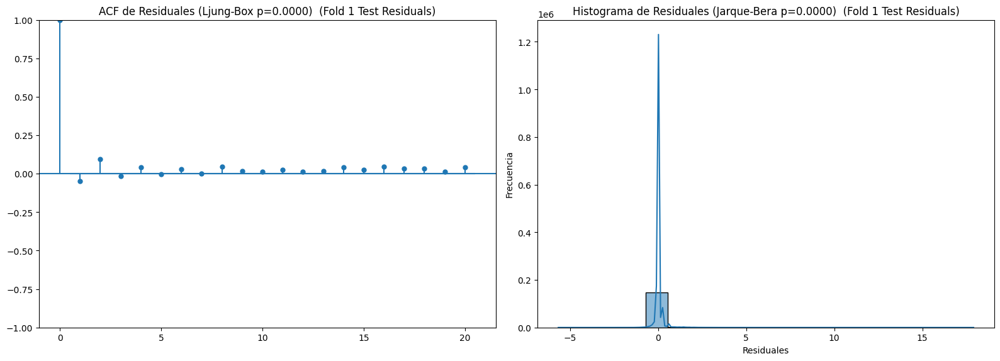
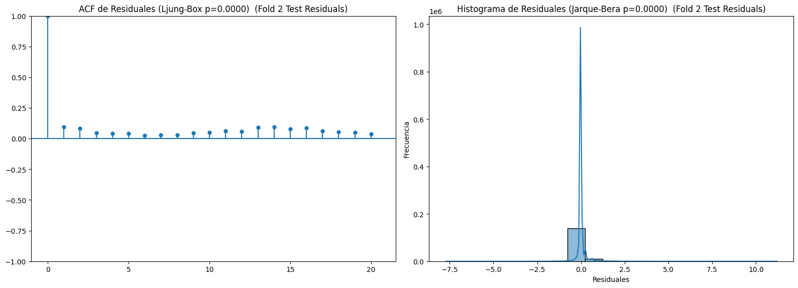
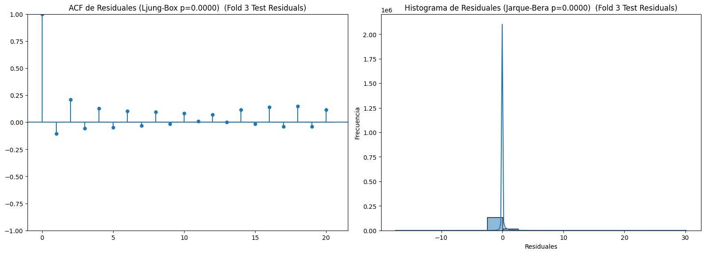

import pandas as pd
import numpy as np
import statsmodels.api as sm
import statsmodels.formula.api as smf
from scipy.ndimage import gaussian_filter1d
import GPy
import matplotlib.pyplot as plt
import seaborn as sns # ## --- CAMBIO: NUEVO --- ##
from sklearn.impute import SimpleImputer
from sklearn.metrics import r2_score, mean_squared_error, mean_absolute_error
from statsmodels.stats.diagnostic import acorr_ljungbox
from statsmodels.stats.stattools import jarque_bera # Ya corregido
from statsmodels.graphics.tsaplots import plot_acf # ## --- CAMBIO: NUEVO --- ##
import warnings
Filtrar FutureWarnings (opcional, si persisten por otras librerías) warnings.simplefilter(action=’ignore’, category=FutureWarning)
— Funciones de Preprocesamiento y Modelado —
def parse_spatial_temporal_ids(df):
"""
Adapta el DataFrame para usar 'zone_id' como spatial_id y 'year_week' para temporal_id_numeric.
"""
df_copy = df.copy()
# Usar 'zone_id' directamente como spatial_id
if 'zone_id' in df_copy.columns:
df_copy['spatial_id'] = df_copy['zone_id'].astype(str)
else:
print("Advertencia: 'zone_id' no encontrada. Usando un ID espacial genérico.")
df_copy['spatial_id'] = 'unknown_spatial_id_' + df_copy.index.astype(str)
# Convertir 'year_week' a fecha y luego a temporal_id_numeric
if 'year_week' in df_copy.columns:
try:
# '%w' para el día de la semana (0=Domingo, 6=Sábado). '-1' asumirá el lunes.
df_copy['week_start_date'] = pd.to_datetime(df_copy['year_week'].astype(str) + '-1', format='%Y-%W-%w')
except ValueError:
print("Advertencia: No se pudo parsear 'year_week' a fecha. Usando factorize para temporal_id_numeric.")
df_copy['week_start_date'] = pd.NaT
min_date = df_copy['week_start_date'].dropna().min()
if pd.isna(min_date):
df_copy['temporal_id_numeric'] = pd.factorize(df_copy['year_week'].astype(str))[0]
else:
df_copy['temporal_id_numeric'] = (df_copy['week_start_date'] - min_date).dt.days // 7
df_copy.loc[df_copy['temporal_id_numeric'].isnull(), 'temporal_id_numeric'] = -1
else:
print("Advertencia: 'year_week' no encontrada. Usando un ID temporal numérico genérico.")
df_copy['temporal_id_numeric'] = np.arange(len(df_copy))
df_copy.sort_values(by=['spatial_id', 'temporal_id_numeric'], inplace=True, na_position='first')
df_copy.drop(columns=['week_start_date', 'year_week', 'zone_id'], inplace=True, errors='ignore')
return df_copy
def clean_col_names(df, cols_to_clean):
df_cleaned = df.copy()
rename_map = {}
cleaned_cols = []
if not isinstance(cols_to_clean, list): cols_to_clean = []
for col in cols_to_clean:
if col is None or col not in df_cleaned.columns: continue
new_col_name = str(col).replace('(F)', '_F') \
.replace('(mph)', '_mph') \
.replace('(in)', '_in') \
.replace('(%)', '_percent') \
.replace('[', '_').replace(']', '_') \
.replace('(', '').replace(')', '') \
.replace('%', 'percent').replace('/', '_').replace('-','_')
rename_map[col] = new_col_name
cleaned_cols.append(new_col_name)
df_cleaned.rename(columns=rename_map, inplace=True)
return df_cleaned, cleaned_cols
def preprocess_data(df, outcome_col, spatial_col, temporal_col, covar_cols, transformation='log'):
processed_df = df.copy()
if processed_df.empty: return processed_df, {}, ""
if not covar_cols: covar_cols = []
numeric_covars = processed_df[covar_cols].select_dtypes(include=np.number).columns.tolist()
if len(numeric_covars) > 0:
imputer_mean = SimpleImputer(strategy='mean')
if processed_df[numeric_covars].isnull().values.any():
processed_df[numeric_covars] = imputer_mean.fit_transform(processed_df[numeric_covars])
categorical_covars = processed_df[covar_cols].select_dtypes(exclude=np.number).columns.tolist()
if len(categorical_covars) > 0:
imputer_mode = SimpleImputer(strategy='most_frequent')
for col in categorical_covars:
if processed_df[col].isnull().any():
processed_df[col] = imputer_mode.fit_transform(processed_df[[col]])
processed_df[col] = pd.factorize(processed_df[col].astype(str))[0]
cols_to_check_critical_nan = [outcome_col, spatial_col, temporal_col]
existing_critical_cols = [col for col in cols_to_check_critical_nan if col in processed_df.columns]
processed_df.dropna(subset=existing_critical_cols, inplace=True)
if processed_df.empty: return processed_df, {}, ""
transformed_outcome_col_name = f'{outcome_col}_transformed'
if transformation == 'log':
processed_df[transformed_outcome_col_name] = np.log1p(processed_df[outcome_col])
elif transformation == 'logit':
epsilon = 1e-6
prob = np.clip(processed_df[outcome_col].astype(float), epsilon, 1 - epsilon)
processed_df[transformed_outcome_col_name] = np.log(prob / (1 - prob))
else:
processed_df[transformed_outcome_col_name] = processed_df[outcome_col]
if processed_df[transformed_outcome_col_name].empty or processed_df[transformed_outcome_col_name].isnull().all():
global_data_variance = 0.01
else:
global_data_variance = np.var(processed_df[transformed_outcome_col_name].dropna())
if pd.isna(global_data_variance) or global_data_variance == 0:
global_data_variance = 0.01
data_variance_map = {}
if spatial_col in processed_df.columns and temporal_col in processed_df.columns:
for idx, row in processed_df.iterrows():
spatial_key = row[spatial_col] if not pd.isna(row[spatial_col]) else "unknown_spatial"
temporal_key = row[temporal_col] if not pd.isna(row[temporal_col]) else -1
data_variance_map[(spatial_key, temporal_key)] = global_data_variance + np.random.uniform(0.001, 0.01)
return processed_df, data_variance_map, transformed_outcome_col_name
def run_stage1_regression(df, transformed_outcome_col, spatial_col, temporal_col, covar_cols, model_type='OLS'):
if df.empty or transformed_outcome_col not in df.columns or temporal_col not in df.columns:
return pd.Series(index=df.index if not df.empty else None, dtype=float, name='stage1_preds')
min_obs_for_regression = max(2, len(covar_cols) + 2 if covar_cols else 2)
if len(df.dropna(subset=[transformed_outcome_col, temporal_col])) < min_obs_for_regression :
return pd.Series(np.nan, index=df.index, name='stage1_preds')
safe_covar_cols = []
if covar_cols:
for col in covar_cols:
if col in df.columns:
if df[col].dropna().nunique() > 1 :
safe_covar_cols.append(f'`{col}`')
elif df[col].dropna().nunique() == 1 and pd.api.types.is_numeric_dtype(df[col].dropna()):
safe_covar_cols.append(f'`{col}`')
formula = f"`{transformed_outcome_col}` ~ 1 + `{temporal_col}`"
if safe_covar_cols:
formula += f" + {' + '.join(safe_covar_cols)}"
stage1_preds = pd.Series(np.nan, index=df.index, name='stage1_preds')
try:
if model_type == 'OLS':
if spatial_col in df.columns and df[spatial_col].nunique() > 1 and df[spatial_col].nunique() < len(df) / 5 :
formula += f" + C(`{spatial_col}`)"
formula_cols = [transformed_outcome_col, temporal_col] + [c.strip('`').replace('\\','') for c in safe_covar_cols]
if spatial_col in df.columns and f"C(`{spatial_col}`)" in formula: formula_cols.append(spatial_col)
model_df = df[formula_cols].dropna()
if len(model_df) < min_obs_for_regression:
raise ValueError("Not enough data to run OLS regression after NA drop.")
model = smf.ols(formula, data=model_df).fit()
stage1_preds.update(model.predict(df))
elif model_type == 'MixedLM':
if spatial_col in df.columns:
df[spatial_col] = df[spatial_col].astype('category')
model = smf.mixedlm(formula, data=df, groups=df[spatial_col], missing='drop').fit(reml=False)
stage1_preds.update(model.predict(df))
else:
model = smf.ols(formula, data=df, missing='drop').fit()
stage1_preds.update(model.predict(df))
except Exception as e:
try:
simple_formula_parts = [f"`{transformed_outcome_col}` ~ 1", f"`{temporal_col}`"]
if spatial_col in df.columns and df[spatial_col].nunique() > 1 and df[spatial_col].nunique() < len(df) / 5:
simple_formula_parts.append(f"C(`{spatial_col}`)")
simple_formula = " + ".join(filter(None,simple_formula_parts))
model_df_fallback = df[[c.strip('`').replace('\\','') for c in simple_formula_parts if '`' in c]].dropna()
if len(model_df_fallback) < min_obs_for_regression:
raise ValueError("Not enough data for fallback OLS regression.")
model = smf.ols(simple_formula, data=model_df_fallback).fit()
stage1_preds.update(model.predict(df))
except Exception as e_fallback:
stage1_preds.fillna(df[transformed_outcome_col].mean(), inplace=True)
stage1_preds.name = 'stage1_preds'
return stage1_preds
def run_stage2_smoothing(df, stage1_preds, transformed_outcome_col, spatial_col, temporal_col, sigma_smooth=1.0):
if df.empty or transformed_outcome_col not in df.columns or spatial_col not in df.columns or temporal_col not in df.columns:
return pd.Series(index=df.index if not df.empty else None, dtype=float, name='gp_mean')
if stage1_preds is None or stage1_preds.empty or stage1_preds.isnull().all():
stage1_preds_filled = pd.Series(np.nanmean(df[transformed_outcome_col]), index=df.index).fillna(0)
else:
stage1_preds_aligned = stage1_preds.reindex(df.index)
stage1_preds_filled = stage1_preds_aligned.fillna(np.nanmean(stage1_preds_aligned)).fillna(0)
transformed_outcome_filled = df[transformed_outcome_col].fillna(np.nanmean(df[transformed_outcome_col])).fillna(0)
residuals = transformed_outcome_filled - stage1_preds_filled
smoothed_residuals = pd.Series(index=df.index, dtype=float, name='smoothed_residuals')
df_temp = df.copy()
df_temp['residuals'] = residuals
for region_id_val in df_temp[spatial_col].unique():
if pd.isna(region_id_val): continue
region_data = df_temp[df_temp[spatial_col] == region_id_val].sort_values(by=temporal_col)
if len(region_data) > 1:
try:
temp_residuals = region_data.groupby(temporal_col)['residuals'].mean().sort_index()
smoothed_for_region = gaussian_filter1d(temp_residuals.values, sigma=sigma_smooth)
smoothed_res_series = pd.Series(smoothed_for_region, index=temp_residuals.index)
smoothed_residuals.loc[region_data.index] = region_data[temporal_col].map(smoothed_res_series)
except Exception as e:
smoothed_residuals.loc[region_data.index] = region_data['residuals'].values
elif len(region_data) == 1:
smoothed_residuals.loc[region_data.index] = region_data['residuals'].values
if not smoothed_residuals.index.equals(df.index):
smoothed_residuals_aligned = smoothed_residuals.reindex(df.index).fillna(0)
else:
smoothed_residuals_aligned = smoothed_residuals.fillna(0)
gp_mean = stage1_preds_filled + smoothed_residuals_aligned
gp_mean.name = 'gp_mean'
return gp_mean
def estimate_uncertainty_params(df, gp_mean_col_name, transformed_outcome_col, spatial_col, temporal_col, data_variance_map):
if df.empty or gp_mean_col_name not in df.columns or transformed_outcome_col not in df.columns or spatial_col not in df.columns or temporal_col not in df.columns:
default_alpha = 0.1
default_nsv_map = {str(rid): 0.01 for rid in df[spatial_col].unique()} if spatial_col in df and not df.empty else {}
return default_alpha, default_nsv_map
residuals_for_alpha = df[transformed_outcome_col].fillna(0) - df[gp_mean_col_name].fillna(0)
alpha = np.var(residuals_for_alpha) if len(residuals_for_alpha) > 1 else 0.1
alpha = max(alpha, 1e-6)
nsv_map = {}
if spatial_col in df.columns:
for region_id_val in df[spatial_col].unique():
if pd.isna(region_id_val): continue
region_data = df[df[spatial_col] == region_id_val]
if region_data.empty or transformed_outcome_col not in region_data or gp_mean_col_name not in region_data: continue
region_residuals = region_data[transformed_outcome_col].fillna(0) - region_data[gp_mean_col_name].fillna(0)
var_region_residuals = np.var(region_residuals) if len(region_residuals) > 1 else 0
avg_data_var_region_list = [data_variance_map.get((r[spatial_col], r[temporal_col]), 0.01) for i, r in region_data.iterrows()]
avg_data_var_region = np.mean(avg_data_var_region_list) if len(avg_data_var_region_list) > 0 else 0.01
nsv = max(0, var_region_residuals - avg_data_var_region)
nsv = max(nsv, 1e-6)
nsv_map[str(region_id_val)] = nsv
if not nsv_map and not df[spatial_col].empty:
nsv_map = {str(rid): 1e-6 for rid in df[spatial_col].unique() if not pd.isna(rid)}
return alpha, nsv_map
# --- Modificación clave: run_stage3_gaussian_process ahora soporta entrenamiento y predicción ---
def run_stage3_gaussian_process(df, gp_mean_col_name, data_variance_map, nsv_map, alpha,
spatial_col, temporal_col, transformed_outcome_col,
kernel_type='Matern52',
mode='train',
trained_gps=None):
final_preds_transformed = pd.Series(index=df.index, dtype=float, name='final_preds_transformed')
final_uncertainty_transformed = pd.Series(index=df.index, dtype=float, name='final_uncertainty_transformed')
if mode == 'train':
fitted_gps = {}
else:
fitted_gps = trained_gps if trained_gps is not None else {}
if df.empty or gp_mean_col_name not in df.columns or transformed_outcome_col not in df.columns or \
spatial_col not in df.columns or temporal_col not in df.columns:
return (final_preds_transformed, final_uncertainty_transformed, fitted_gps) if mode == 'train' else (final_preds_transformed, final_uncertainty_transformed)
df_copy = df.sort_values(by=[spatial_col, temporal_col])
alpha_safe = max(alpha, 1e-6)
for region_id_val in df_copy[spatial_col].unique():
if pd.isna(region_id_val): continue
region_df = df_copy[df_copy[spatial_col] == region_id_val].copy()
if region_df.empty or region_df[gp_mean_col_name].isnull().all():
final_preds_transformed.loc[region_df.index] = region_df[gp_mean_col_name]
avg_nsv_val = np.mean(list(nsv_map.values()) if nsv_map else [1e-3])
final_uncertainty_transformed.loc[region_df.index] = alpha_safe + (avg_nsv_val if not pd.isna(avg_nsv_val) else 1e-3)
continue
X_region = region_df[[temporal_col]].values.astype(float)
Y_region_observed = region_df[[transformed_outcome_col]].values
current_nsv = nsv_map.get(str(region_id_val), 1e-6)
current_nsv = max(current_nsv if not pd.isna(current_nsv) else 1e-6, 1e-6)
input_dim = 1
kernel_variance = alpha_safe
std_x = np.nanstd(X_region) if len(X_region) > 1 else 0
ls_val = std_x / 4 if std_x > 0 else 1.0
kernel_lengthscale = max(1.0, ls_val if not pd.isna(ls_val) else 1.0)
if kernel_type == 'Matern52':
kernel_obj = GPy.kern.Matern52(input_dim=input_dim, variance=kernel_variance, lengthscale=kernel_lengthscale)
elif kernel_type == 'RBF':
kernel_obj = GPy.kern.RBF(input_dim=input_dim, variance=kernel_variance, lengthscale=kernel_lengthscale)
else:
kernel_obj = GPy.kern.Matern52(input_dim=input_dim, variance=kernel_variance, lengthscale=kernel_lengthscale)
mean_func_values_raw = region_df[gp_mean_col_name].values
mf = GPy.core.Mapping(input_dim, 1)
if len(X_region.flatten()) > 0 and len(mean_func_values_raw) > 0 and not np.all(pd.isna(mean_func_values_raw)):
mean_func_series = pd.Series(mean_func_values_raw)
mean_func_imputed = mean_func_series.ffill().bfill()
if mean_func_imputed.isnull().any():
mean_func_imputed = mean_func_imputed.fillna(np.nanmean(mean_func_series)).fillna(0)
mean_func_imputed_values = mean_func_imputed.values
if len(mean_func_imputed_values) > 0:
mf.f = lambda x_pred_gp: np.interp(x_pred_gp.flatten(), X_region.flatten(), mean_func_imputed_values,
left=mean_func_imputed_values[0],
right=mean_func_imputed_values[-1]).reshape(-1,1)
else:
mf.f = lambda x_pred_gp: np.full((x_pred_gp.shape[0],1), np.nanmean(Y_region_observed) if not np.all(pd.isna(Y_region_observed)) else 0)
else:
fallback_mean = np.nanmean(Y_region_observed) if not np.all(pd.isna(Y_region_observed)) else 0
mf.f = lambda x_pred_gp: np.full((x_pred_gp.shape[0],1), fallback_mean)
mf.update_gradients = lambda a,b: None
mf.parameters_changed = lambda: None
nan_y_indices = np.isnan(Y_region_observed).flatten()
X_region_valid = X_region[~nan_y_indices]
Y_region_observed_valid = Y_region_observed[~nan_y_indices]
gp_model = None
pred_mean_all_x = None
pred_var_all_x = None
if mode == 'train':
if len(X_region_valid) > 0:
Y_noise_var_region_list = []
for _, r_row in region_df.iterrows():
data_var = data_variance_map.get((r_row[spatial_col], r_row[temporal_col]), 0.01)
Y_noise_var_region_list.append(data_var + current_nsv)
Y_noise_var_region = np.array(Y_noise_var_region_list).reshape(-1, 1)
Y_noise_var_region_valid = Y_noise_var_region[~nan_y_indices]
Y_noise_var_region_valid = np.maximum(Y_noise_var_region_valid, 1e-6)
likelihood_valid = GPy.likelihoods.Gaussian(variance=Y_noise_var_region_valid)
try:
gp_model = GPy.core.GP(X=X_region_valid, Y=Y_region_observed_valid, kernel=kernel_obj,
likelihood=likelihood_valid, mean_function=mf,
inference_method=GPy.inference.latent_function_inference.ExactGaussianInference())
fitted_gps[str(region_id_val)] = gp_model
pred_mean_all_x, pred_var_all_x = gp_model.predict(X_region)
except Exception as e_gp:
pred_mean_all_x = mf.f(X_region).flatten() if X_region.shape[0]>0 else np.full(len(region_df.index), np.nan)
pred_var_all_x = np.full(X_region.shape[0], alpha_safe + current_nsv).reshape(-1,1)
else:
pred_mean_all_x = mf.f(X_region).flatten() if X_region.shape[0]>0 else np.full(len(region_df.index), np.nan)
pred_var_all_x = np.full(X_region.shape[0], alpha_safe + current_nsv).reshape(-1,1)
elif mode == 'predict':
if str(region_id_val) in fitted_gps:
gp_model = fitted_gps[str(region_id_val)]
try:
pred_mean_all_x, pred_var_all_x = gp_model.predict(X_region)
except Exception as e_pred:
pred_mean_all_x = mf.f(X_region).flatten() if X_region.shape[0]>0 else np.full(len(region_df.index), np.nan)
pred_var_all_x = np.full(X_region.shape[0], alpha_safe + current_nsv).reshape(-1,1)
else:
pred_mean_all_x = mf.f(X_region).flatten() if X_region.shape[0]>0 else np.full(len(region_df.index), np.nan)
pred_var_all_x = np.full(X_region.shape[0], alpha_safe + current_nsv).reshape(-1,1)
final_preds_transformed.loc[region_df.index] = pred_mean_all_x.flatten() if isinstance(pred_mean_all_x, np.ndarray) else pred_mean_all_x
final_uncertainty_transformed.loc[region_df.index] = pred_var_all_x.flatten() if isinstance(pred_var_all_x, np.ndarray) else pred_var_all_x
return (final_preds_transformed, final_uncertainty_transformed, fitted_gps) if mode == 'train' else (final_preds_transformed, final_uncertainty_transformed)
def postprocess_results(final_preds_transformed, transformation='log'):
if final_preds_transformed is None or final_preds_transformed.empty or final_preds_transformed.isnull().all():
return pd.Series(dtype=float, name='final_preds_original_scale')
if transformation == 'log':
transformed_values = final_preds_transformed.fillna(np.log1p(0))
with np.errstate(over='ignore', invalid='ignore'):
final_preds_original_scale = np.expm1(transformed_values)
final_preds_original_scale = np.maximum(0, final_preds_original_scale)
elif transformation == 'logit':
transformed_values = final_preds_transformed.fillna(0)
final_preds_original_scale = 1 / (1 + np.exp(-transformed_values))
else:
final_preds_original_scale = final_preds_transformed.copy()
final_preds_original_scale.name = 'final_preds_original_scale'
return final_preds_original_scale
def plot_region_results(df, region_id_to_plot, actual_col, pred_col_transformed, uncertainty_col_transformed,
pred_col_original, spatial_col, temporal_col, transformation='log', title_suffix=""):
if df.empty or spatial_col not in df.columns or actual_col not in df.columns or temporal_col not in df.columns: return
region_data = df[df[spatial_col] == region_id_to_plot].sort_values(by=temporal_col)
if region_data.empty : return
if pred_col_original not in region_data.columns: return
x_labels = region_data[temporal_col].astype(str).values
x_positions = np.arange(len(x_labels))
plt.figure(figsize=(14, 7))
plt.plot(x_positions, region_data[actual_col], 'ko-', label=f'Reales: {actual_col}', markersize=4)
plt.plot(x_positions, region_data[pred_col_original], 'b.-', label=f'Predicciones GP: {pred_col_original}', markersize=4)
if transformation == 'log' and pred_col_transformed in region_data.columns and uncertainty_col_transformed in region_data.columns:
pred_transformed_vals = region_data[pred_col_transformed].fillna(np.log1p(0))
uncertainty_vals = region_data[uncertainty_col_transformed].fillna(1e-3)
std_dev_transformed = np.sqrt(np.maximum(0, uncertainty_vals))
with np.errstate(over='ignore', invalid='ignore'):
upper_bound_transformed = pred_transformed_vals + 1.96 * std_dev_transformed
lower_bound_transformed = pred_transformed_vals - 1.96 * std_dev_transformed
upper_bound_original = np.expm1(upper_bound_transformed)
lower_bound_original = np.expm1(lower_bound_transformed)
lower_bound_original = np.maximum(0, lower_bound_original)
pred_original_filled = region_data[pred_col_original].bfill().ffill().fillna(0)
upper_bound_original = upper_bound_original.fillna(pred_original_filled)
lower_bound_original = lower_bound_original.fillna(pred_original_filled)
plt.fill_between(x_positions,
lower_bound_original.values,
upper_bound_original.values,
color='blue', alpha=0.2, label='Incertidumbre 95% GP (Aprox.)')
plt.title(f'Predicciones ST-GPR para {spatial_col}: {region_id_to_plot} {title_suffix}')
plt.xlabel(temporal_col)
if len(x_labels) > 20:
plt.xticks(x_positions[::len(x_positions)//10 + 1], x_labels[::len(x_labels)//10 + 1], rotation=45, ha='right')
else:
plt.xticks(x_positions, x_labels, rotation=45, ha='right')
plt.ylabel(actual_col)
plt.legend()
plt.grid(True)
plt.tight_layout()
plt.show()
## --- CAMBIO: NUEVO - Función para graficar diagnósticos de residuales --- ##
def plot_residuals_diagnostics(residuals, lb_p_value, jb_p_value, title_suffix=""):
if residuals.empty or residuals.isnull().all():
print(f"No hay residuales válidos para graficar diagnósticos {title_suffix}.")
return
residuals_clean = residuals.dropna()
if len(residuals_clean) < 2:
print(f"No hay suficientes residuales no-NaN para graficar diagnósticos {title_suffix}.")
return
# Gráfico 1: ACF de los Residuales
fig, axes = plt.subplots(1, 2, figsize=(16, 6))
# Plot ACF
if len(residuals_clean) > 1:
plot_acf(residuals_clean, ax=axes[0], lags=min(20, len(residuals_clean)//2 - 1), alpha=0.05) # Lags hasta la mitad de la serie, máximo 20
axes[0].set_title(f'ACF de Residuales (Ljung-Box p={lb_p_value:.4f}) {title_suffix}')
else:
axes[0].set_title(f'ACF de Residuales (Datos insuficientes) {title_suffix}')
axes[0].text(0.5, 0.5, 'Datos insuficientes', horizontalalignment='center', verticalalignment='center', transform=axes[0].transAxes)
# Gráfico 2: Histograma de los Residuales
sns.histplot(residuals_clean, kde=True, ax=axes[1])
axes[1].set_title(f'Histograma de Residuales (Jarque-Bera p={jb_p_value:.4f}) {title_suffix}')
axes[1].set_xlabel('Residuales')
axes[1].set_ylabel('Frecuencia')
plt.tight_layout()
plt.show()
# ######################################################################
def calculate_metrics(y_true, y_pred, y_name="", y_true_train_for_mase=None):
common_index = y_true.dropna().index.intersection(y_pred.dropna().index)
y_true_aligned = y_true.loc[common_index]
y_pred_aligned = y_pred.loc[common_index]
if len(y_true_aligned) == 0:
return {
'RMSE': np.nan,
'MAE': np.nan,
'MAPE': np.nan,
'SMAPE': np.nan,
'MASE': np.nan,
'R2': np.nan,
'Ljung-Box p-valor': np.nan,
'Jarque-Bera p-valor': np.nan,
'Count': 0,
'Residuals': pd.Series(dtype=float) # ## --- CAMBIO: NUEVO --- ##
}
# Calcular SMAPE
smape_val = np.mean(2 * np.abs(y_pred_aligned - y_true_aligned) / (np.abs(y_true_aligned) + np.abs(y_pred_aligned) + 1e-8)) * 100
# Calcular MASE
mase_val = np.nan
if y_true_train_for_mase is not None and len(y_true_train_for_mase) > 1:
scale = np.mean(np.abs(np.diff(y_true_train_for_mase.dropna().values)))
if scale > 1e-8:
mase_val = np.mean(np.abs(y_true_aligned - y_pred_aligned)) / scale
else:
mase_val = np.nan
# Calcular Residuales para pruebas estadísticas
residuals = y_true_aligned - y_pred_aligned
# Ljung-Box Test (para autocorrelación de residuales)
ljungbox_p_value = np.nan
if len(residuals) > 10:
with warnings.catch_warnings():
warnings.simplefilter("ignore")
lb_test = acorr_ljungbox(residuals, lags=[min(10, max(1, int(len(residuals)/5)))], return_df=True) # ## --- CAMBIO: return_df=True --- ##
ljungbox_p_value = lb_test.loc[lb_test.index[-1], 'lb_pvalue']
# Jarque-Bera Test (para normalidad de residuales)
jarquebera_p_value = np.nan
if len(residuals) >= 2:
jb_test = jarque_bera(residuals)
jarquebera_p_value = jb_test[1]
metrics = {
'RMSE': np.sqrt(mean_squared_error(y_true_aligned, y_pred_aligned)),
'MAE': mean_absolute_error(y_true_aligned, y_pred_aligned),
'MAPE': np.mean(np.abs((y_true_aligned - y_pred_aligned) / (y_true_aligned + 1e-6))) * 100,
'SMAPE': smape_val,
'MASE': mase_val,
'R2': r2_score(y_true_aligned, y_pred_aligned),
'Ljung-Box p-valor': ljungbox_p_value,
'Jarque-Bera p-valor': jarquebera_p_value,
'Count': len(y_true_aligned),
'Residuals': residuals # ## --- CAMBIO: NUEVO --- ##
}
return metrics
def run_st_gpr_pipeline(input_df,
target_variable_name,
spatial_id_col,
temporal_id_col,
covariate_list=None,
sigma_smooth_val=1.0,
gp_kernel_type='Matern52',
transformation_type='log',
model_type_stage1='OLS',
mode='train',
trained_gps_dict=None):
df_working = input_df.copy()
if spatial_id_col not in df_working.columns or temporal_id_col not in df_working.columns:
raise ValueError(f"Las columnas '{spatial_id_col}' o '{temporal_id_col}' no se encontraron en el DataFrame. Asegúrate de que los IDs espaciales y temporales estén preprocesados.")
if covariate_list is None:
default_covars_cleaned = [
'Temperature_F', 'Wind_Speed_mph', 'Precipitation_in', 'Humidity_percent',
'Junction', 'Railway', 'Roundabout', 'Station', 'Stop', 'Traffic_Signal',
'is_night', 'is_weekend', 'Temperature_F_extreme', 'Wind_Speed_mph_extreme',
'Precipitation_in_extreme', 'Humidity_percent_extreme'
]
covariate_list = [col for col in default_covars_cleaned if col in df_working.columns]
if not covariate_list:
excluded_cols = [target_variable_name, spatial_id_col, temporal_id_col]
covariate_list = [col for col in df_working.columns if col not in excluded_cols and \
(pd.api.types.is_numeric_dtype(df_working[col]) or pd.api.types.is_bool_dtype(df_working[col]))]
if not isinstance(covariate_list, list): covariate_list = []
TARGET_VAR_CLEANED = target_variable_name
COVAR_COLS_CLEANED = [col for col in covariate_list if col in df_working.columns]
df_processed, data_var_map, transformed_outcome_col_name = preprocess_data(
df_working, TARGET_VAR_CLEANED, spatial_id_col, temporal_id_col, COVAR_COLS_CLEANED,
transformation=transformation_type
)
if df_processed.empty:
print("DataFrame vacío después del preprocesamiento. Retornando DataFrame vacío.")
empty_df_cols = [spatial_id_col, temporal_id_col, transformed_outcome_col_name, 'stage1_preds', 'gp_mean', 'final_preds_transformed', 'final_uncertainty_transformed', 'final_preds_original_scale']
if mode == 'train':
return pd.DataFrame(columns=empty_df_cols), {}
else:
return pd.DataFrame(columns=empty_df_cols)
stage1_predictions = run_stage1_regression(
df_processed, transformed_outcome_col_name, spatial_id_col, temporal_id_col, COVAR_COLS_CLEANED,
model_type=model_type_stage1
)
df_processed['stage1_preds'] = stage1_predictions.reindex(df_processed.index)
gp_mean_predictions = run_stage2_smoothing(
df_processed,
df_processed['stage1_preds'],
transformed_outcome_col_name,
spatial_id_col,
temporal_id_col,
sigma_smooth=sigma_smooth_val
)
df_processed['gp_mean'] = gp_mean_predictions.reindex(df_processed.index)
alpha_est, nsv_est_map = estimate_uncertainty_params(
df_processed, 'gp_mean', transformed_outcome_col_name, spatial_id_col, temporal_id_col, data_var_map
)
if mode == 'train':
final_preds_transformed, final_uncertainty_transformed, fitted_gps_for_return = run_stage3_gaussian_process(
df_processed.copy(),
'gp_mean',
data_var_map,
nsv_est_map,
alpha_est,
spatial_id_col,
temporal_id_col,
transformed_outcome_col_name,
kernel_type=gp_kernel_type,
mode='train'
)
elif mode == 'predict':
final_preds_transformed, final_uncertainty_transformed = run_stage3_gaussian_process(
df_processed.copy(),
'gp_mean',
data_var_map,
nsv_est_map,
alpha_est,
spatial_id_col,
temporal_id_col,
transformed_outcome_col_name,
kernel_type=gp_kernel_type,
mode='predict',
trained_gps=trained_gps_dict
)
else:
raise ValueError("El 'mode' debe ser 'train' o 'predict'.")
df_processed['final_preds_transformed'] = final_preds_transformed.reindex(df_processed.index)
df_processed['final_uncertainty_transformed'] = final_uncertainty_transformed.reindex(df_processed.index)
final_predictions_original_scale = postprocess_results(
df_processed['final_preds_transformed'], transformation=transformation_type
)
df_processed['final_preds_original_scale'] = final_predictions_original_scale.reindex(df_processed.index)
if mode == 'train':
return df_processed, fitted_gps_for_return
else:
return df_processed
— Sección Principal para Ejecución y Validación —
if __name__ == '__main__':
# Define aquí el porcentaje de datos a muestrear.
# 1.0 para el dataset completo, 0.1 para el 10%, etc.
sample_data_percentage = 0.3 # <-- CAMBIA ESTO PARA MUESTREAR TUS DATOS (ej. 0.1 para 10%)
df_raw = pd.read_csv("california_accidents_cleaned_complete.csv")
target_variable_input = 'accident_count'
spatial_id_raw_col = 'zone_id'
temporal_id_raw_col = 'year_week'
covariables_a_usar_input = [
'Temperature(F)', 'Wind_Speed(mph)', 'Precipitation(in)', 'Humidity(%)',
'Junction', 'Railway', 'Roundabout', 'Station', 'Stop', 'Traffic_Signal',
'is_night', 'is_weekend', 'Temperature(F)_extreme', 'Wind_Speed(mph)_extreme',
'Precipitation(in)_extreme', 'Humidity(%)_extreme'
]
covariables_a_usar_input = [col for col in covariables_a_usar_input if col in df_raw.columns]
if df_raw.empty:
print("El DataFrame de entrada está vacío. No se puede ejecutar el pipeline.")
else:
cols_to_clean_for_mapping = [target_variable_input] + covariables_a_usar_input
cols_to_clean_for_mapping = [col for col in cols_to_clean_for_mapping if col in df_raw.columns]
df_initial_cleaned, cleaned_names_list = clean_col_names(df_raw.copy(), cols_to_clean_for_mapping)
original_to_cleaned_map = dict(zip(cols_to_clean_for_mapping, cleaned_names_list))
target_variable_name_cleaned = original_to_cleaned_map.get(target_variable_input, target_variable_input)
covariables_a_usar_cleaned = [original_to_cleaned_map.get(col, col) for col in covariables_a_usar_input]
covariables_a_usar_cleaned = [col for col in covariables_a_usar_cleaned if col in df_initial_cleaned.columns]
df_preprocessed_ids = parse_spatial_temporal_ids(df_initial_cleaned.copy())
df_preprocessed_ids.sort_values(by=['temporal_id_numeric', 'spatial_id'], inplace=True)
if sample_data_percentage < 1.0:
all_spatial_ids = df_preprocessed_ids['spatial_id'].unique()
np.random.seed(42)
num_spatial_ids_to_sample = max(1, int(len(all_spatial_ids) * sample_data_percentage))
sampled_spatial_ids = np.random.choice(all_spatial_ids, num_spatial_ids_to_sample, replace=False)
df_preprocessed_ids = df_preprocessed_ids[df_preprocessed_ids['spatial_id'].isin(sampled_spatial_ids)].copy()
print(f"\nSe ha muestreado el dataset: {len(sampled_spatial_ids)} de {len(all_spatial_ids)} zonas espaciales seleccionadas ({sample_data_percentage*100:.1f}%).")
print(f"Nuevo tamaño del dataset muestreado: {len(df_preprocessed_ids)} filas.")
unique_temporal_ids = df_preprocessed_ids['temporal_id_numeric'].unique()
unique_temporal_ids.sort()
n_splits = 5
min_train_weeks_ratio = 0.2
min_train_weeks_count = int(len(unique_temporal_ids) * min_train_weeks_ratio)
if min_train_weeks_count < 2:
min_train_weeks_count = 2
available_for_test = unique_temporal_ids[min_train_weeks_count:]
fold_size = len(available_for_test) // n_splits
if fold_size == 0 and len(available_for_test) > 0:
fold_size = 1
elif fold_size == 0 and len(available_for_test) == 0:
print("No hay suficientes datos temporales para crear folds de prueba después del conjunto de entrenamiento inicial.")
exit()
all_metrics = []
all_df_results_test_combined = pd.DataFrame()
print(f"\n--- Iniciando Validación Cruzada Leave-Time-Out (LTO) Estricta con {n_splits} folds ---")
y_true_train_for_mase_all_folds = pd.Series(dtype=float)
for i in range(n_splits):
print(f"\nProcesando Fold {i+1}/{n_splits}...")
start_idx_test = min_train_weeks_count + (i * fold_size)
if start_idx_test >= len(unique_temporal_ids):
print(f"Fold {i+1}: No hay más IDs temporales para crear el conjunto de prueba. Terminando folds.")
break
test_temporal_ids_current_fold = unique_temporal_ids[start_idx_test : start_idx_test + fold_size]
if len(test_temporal_ids_current_fold) == 0:
print(f"Fold {i+1}: Conjunto de prueba vacío en este bloque. Saltando.")
continue
train_temporal_ids_current_fold = unique_temporal_ids[unique_temporal_ids < test_temporal_ids_current_fold.min()]
df_train_fold = df_preprocessed_ids[df_preprocessed_ids['temporal_id_numeric'].isin(train_temporal_ids_current_fold)].copy()
df_test_fold = df_preprocessed_ids[df_preprocessed_ids['temporal_id_numeric'].isin(test_temporal_ids_current_fold)].copy()
print(f" DEBUG - df_train_fold size: {len(df_train_fold)}, df_test_fold size: {len(df_test_fold)}")
if df_train_fold.empty:
print(f"Fold {i+1}: Conjunto de entrenamiento vacío ({len(train_temporal_ids_current_fold)} semanas). Necesitas más datos de historial inicial. Saltando este fold.")
continue
if df_test_fold.empty:
print(f"Fold {i+1}: Conjunto de prueba vacío ({len(test_temporal_ids_current_fold)} semanas). Saltando este fold.")
continue
print(f" Entrenamiento en {len(train_temporal_ids_current_fold)} semanas (hasta temporal_id {train_temporal_ids_current_fold.max() if len(train_temporal_ids_current_fold) > 0 else 'N/A'})")
print(f" Prueba en {len(test_temporal_ids_current_fold)} semanas (de temporal_id {test_temporal_ids_current_fold.min()} a {test_temporal_ids_current_fold.max()})")
print(f" Tamaño Train: {len(df_train_fold)}, Tamaño Test: {len(df_test_fold)}")
df_results_train, fitted_gps_for_predict = run_st_gpr_pipeline(
input_df=df_train_fold,
target_variable_name=target_variable_name_cleaned,
spatial_id_col='spatial_id',
temporal_id_col='temporal_id_numeric',
covariate_list=covariables_a_usar_cleaned,
sigma_smooth_val=0.5,
gp_kernel_type='Matern52',
transformation_type='log',
model_type_stage1='OLS',
mode='train'
)
y_true_train_for_mase_all_folds = pd.concat([y_true_train_for_mase_all_folds, df_results_train[target_variable_name_cleaned]])
print(f" DEBUG - Fitted GPs count for fold {i+1} (train): {len(fitted_gps_for_predict)}")
if not fitted_gps_for_predict:
print(f"Fold {i+1}: No se pudieron entrenar GPs válidos. Saltando predicción para este fold.")
continue
df_results_test = run_st_gpr_pipeline(
input_df=df_test_fold,
target_variable_name=target_variable_name_cleaned,
spatial_id_col='spatial_id',
temporal_id_col='temporal_id_numeric',
covariate_list=covariables_a_usar_cleaned,
sigma_smooth_val=0.5,
gp_kernel_type='Matern52',
transformation_type='log',
model_type_stage1='OLS',
mode='predict',
trained_gps_dict=fitted_gps_for_predict
)
actual_col_for_metrics = target_variable_name_cleaned
print(f" DEBUG - Columns in df_results_test for fold {i+1}: {df_results_test.columns.tolist()}")
if 'final_preds_original_scale' in df_results_test.columns:
print(f" DEBUG - NaNs in final_preds_original_scale for fold {i+1}: {df_results_test['final_preds_original_scale'].isnull().sum()} / {len(df_results_test)}")
if actual_col_for_metrics in df_results_test.columns:
print(f" DEBUG - NaNs in actual_col_for_metrics for fold {i+1}: {df_results_test[actual_col_for_metrics].isnull().sum()} / {len(df_results_test)}")
if 'final_preds_original_scale' in df_results_test.columns and actual_col_for_metrics in df_results_test.columns:
temp_y_true = df_results_test[actual_col_for_metrics]
temp_y_pred = df_results_test['final_preds_original_scale']
common_index_count = temp_y_true.dropna().index.intersection(temp_y_pred.dropna().index).shape[0]
print(f" DEBUG - Valid data points for metrics in fold {i+1}: {common_index_count}")
if common_index_count == 0:
print(f"Fold {i+1}: No hay suficientes puntos de datos válidos para calcular métricas después de eliminar NaNs.")
if 'final_preds_original_scale' in df_results_test.columns and actual_col_for_metrics in df_results_test.columns:
metrics_fold = calculate_metrics(
df_results_test[actual_col_for_metrics],
df_results_test['final_preds_original_scale'],
y_name=f"Fold {i+1}",
y_true_train_for_mase=y_true_train_for_mase_all_folds
)
print(f" Métricas del Fold {i+1}: RMSE={metrics_fold['RMSE']:.4f}, MAE={metrics_fold['MAE']:.4f}, MAPE={metrics_fold['MAPE']:.4f}%, SMAPE={metrics_fold['SMAPE']:.4f}%, MASE={metrics_fold['MASE']:.4f}, R2={metrics_fold['R2']:.4f}, Ljung-Box p-valor={metrics_fold['Ljung-Box p-valor']:.4f}, Jarque-Bera p-valor={metrics_fold['Jarque-Bera p-valor']:.4f} (Count={metrics_fold['Count']})")
# ## --- CAMBIO: NUEVO - Graficar diagnósticos de residuales por fold --- ##
plot_residuals_diagnostics(
metrics_fold['Residuals'],
metrics_fold['Ljung-Box p-valor'],
metrics_fold['Jarque-Bera p-valor'],
title_suffix=f" (Fold {i+1} Test Residuals)"
)
# ######################################################################
if metrics_fold['Count'] > 0:
all_metrics.append(metrics_fold)
all_df_results_test_combined = pd.concat([all_df_results_test_combined, df_results_test])
else:
print(f"Fold {i+1}: Métricas no válidas (Count=0), no se añadirán a all_metrics.")
else:
print(f"No se pudieron calcular las métricas para el Fold {i+1}: columnas de resultados o variable objetivo no encontradas.")
print("\n--- Resumen de Métricas de Validación Cruzada (Leave-Time-Out) ---")
metrics_df = pd.DataFrame(all_metrics)
print(metrics_df[['RMSE', 'MAE', 'MAPE', 'SMAPE', 'MASE', 'R2', 'Ljung-Box p-valor', 'Jarque-Bera p-valor', 'Count']].round(4))
print("\nMétricas Promedio:")
print(metrics_df[['RMSE', 'MAE', 'MAPE', 'SMAPE', 'MASE', 'R2', 'Ljung-Box p-valor', 'Jarque-Bera p-valor', 'Count']].mean(numeric_only=True).round(4))
print("\nMétricas Desviación Estándar:")
print(metrics_df[['RMSE', 'MAE', 'MAPE', 'SMAPE', 'MASE', 'R2', 'Ljung-Box p-valor', 'Jarque-Bera p-valor', 'Count']].std(numeric_only=True).round(4))
if not all_df_results_test_combined.empty:
spatial_col_for_plot = 'spatial_id'
temporal_col_for_plot = 'temporal_id_numeric'
target_col_for_plot = target_variable_name_cleaned
zones_with_accidents = all_df_results_test_combined[all_df_results_test_combined[target_col_for_plot] > 0]['spatial_id'].unique()
if len(zones_with_accidents) > 0:
zona_para_graficar_val = zones_with_accidents[0]
print(f"\nGraficando resultados para la zona con al menos un accidente reportado: {zona_para_graficar_val}")
else:
zona_para_graficar_val = all_df_results_test_combined[spatial_col_for_plot].unique()[0]
print(f"\nAdvertencia: No se encontraron zonas con valores de '{target_col_for_plot}' > 0 en los resultados combinados de prueba. Graficando la primera zona disponible: {zona_para_graficar_val}")
if spatial_col_for_plot in all_df_results_test_combined.columns and all_df_results_test_combined[spatial_col_for_plot].nunique() > 0:
plot_region_results(
df=all_df_results_test_combined,
region_id_to_plot=zona_para_graficar_val,
actual_col=target_col_for_plot,
pred_col_transformed='final_preds_transformed',
uncertainty_col_transformed='final_uncertainty_transformed',
pred_col_original='final_preds_original_scale',
spatial_col=spatial_col_for_plot,
temporal_col=temporal_col_for_plot,
transformation='log',
title_suffix="(Resultados Combinados de Validación LTO)"
)
else:
print("\nNo hay datos suficientes para graficar resultados después de la validación cruzada.")
else:
print("\nNo se generaron resultados de folds para graficar.")
Se ha muestreado el dataset: 2217 de 7391 zonas espaciales seleccionadas (30.0%).
Nuevo tamaño del dataset muestreado: 940008 filas.
--- Iniciando Validación Cruzada Leave-Time-Out (LTO) Estricta con 5 folds ---
Procesando Fold 1/5...
DEBUG - df_train_fold size: 186228, df_test_fold size: 150756
Entrenamiento en 83 semanas (hasta temporal_id 82)
Prueba en 67 semanas (de temporal_id 83 a 149)
Tamaño Train: 186228, Tamaño Test: 150756
DEBUG - Fitted GPs count for fold 1 (train): 2217
DEBUG - Columns in df_results_test for fold 1: ['accident_count', 'Start_Lat', 'Start_Lng', 'lat_bin', 'lng_bin', 'Temperature_F', 'Wind_Speed_mph', 'Precipitation_in', 'Humidity_percent', 'Temperature_F_extreme', 'Wind_Speed_mph_extreme', 'Precipitation_in_extreme', 'Humidity_percent_extreme', 'Junction', 'Railway', 'Roundabout', 'Station', 'Stop', 'Traffic_Signal', 'is_night', 'is_weekend', 'lat_min', 'lat_max', 'lng_min', 'lng_max', 'spatial_id', 'temporal_id_numeric', 'accident_count_transformed', 'stage1_preds', 'gp_mean', 'final_preds_transformed', 'final_uncertainty_transformed', 'final_preds_original_scale']
DEBUG - NaNs in final_preds_original_scale for fold 1: 0 / 150756
DEBUG - NaNs in actual_col_for_metrics for fold 1: 0 / 150756
DEBUG - Valid data points for metrics in fold 1: 150756
Métricas del Fold 1: RMSE=0.2681, MAE=0.0631, MAPE=933729.7960%, SMAPE=28.3193%, MASE=0.1237, R2=0.9816, Ljung-Box p-valor=0.0000, Jarque-Bera p-valor=0.0000 (Count=150756)

Procesando Fold 2/5...
DEBUG - df_train_fold size: 336984, df_test_fold size: 150756
Entrenamiento en 150 semanas (hasta temporal_id 149)
Prueba en 67 semanas (de temporal_id 150 a 216)
Tamaño Train: 336984, Tamaño Test: 150756
DEBUG - Fitted GPs count for fold 2 (train): 2217
DEBUG - Columns in df_results_test for fold 2: ['accident_count', 'Start_Lat', 'Start_Lng', 'lat_bin', 'lng_bin', 'Temperature_F', 'Wind_Speed_mph', 'Precipitation_in', 'Humidity_percent', 'Temperature_F_extreme', 'Wind_Speed_mph_extreme', 'Precipitation_in_extreme', 'Humidity_percent_extreme', 'Junction', 'Railway', 'Roundabout', 'Station', 'Stop', 'Traffic_Signal', 'is_night', 'is_weekend', 'lat_min', 'lat_max', 'lng_min', 'lng_max', 'spatial_id', 'temporal_id_numeric', 'accident_count_transformed', 'stage1_preds', 'gp_mean', 'final_preds_transformed', 'final_uncertainty_transformed', 'final_preds_original_scale']
DEBUG - NaNs in final_preds_original_scale for fold 2: 0 / 150756
DEBUG - NaNs in actual_col_for_metrics for fold 2: 0 / 150756
DEBUG - Valid data points for metrics in fold 2: 150756
Métricas del Fold 2: RMSE=0.3346, MAE=0.0811, MAPE=1107557.0063%, SMAPE=30.8691%, MASE=0.1543, R2=0.9859, Ljung-Box p-valor=0.0000, Jarque-Bera p-valor=0.0000 (Count=150756)

Procesando Fold 3/5...
DEBUG - df_train_fold size: 487740, df_test_fold size: 150756
Entrenamiento en 217 semanas (hasta temporal_id 216)
Prueba en 67 semanas (de temporal_id 217 a 283)
Tamaño Train: 487740, Tamaño Test: 150756
DEBUG - Fitted GPs count for fold 3 (train): 2217
DEBUG - Columns in df_results_test for fold 3: ['accident_count', 'Start_Lat', 'Start_Lng', 'lat_bin', 'lng_bin', 'Temperature_F', 'Wind_Speed_mph', 'Precipitation_in', 'Humidity_percent', 'Temperature_F_extreme', 'Wind_Speed_mph_extreme', 'Precipitation_in_extreme', 'Humidity_percent_extreme', 'Junction', 'Railway', 'Roundabout', 'Station', 'Stop', 'Traffic_Signal', 'is_night', 'is_weekend', 'lat_min', 'lat_max', 'lng_min', 'lng_max', 'spatial_id', 'temporal_id_numeric', 'accident_count_transformed', 'stage1_preds', 'gp_mean', 'final_preds_transformed', 'final_uncertainty_transformed', 'final_preds_original_scale']
DEBUG - NaNs in final_preds_original_scale for fold 3: 0 / 150756
DEBUG - NaNs in actual_col_for_metrics for fold 3: 0 / 150756
DEBUG - Valid data points for metrics in fold 3: 150756
Métricas del Fold 3: RMSE=0.5736, MAE=0.1301, MAPE=1808683.4850%, SMAPE=42.7205%, MASE=0.2305, R2=0.9665, Ljung-Box p-valor=0.0000, Jarque-Bera p-valor=0.0000 (Count=150756)

Procesando Fold 4/5...
DEBUG - df_train_fold size: 638496, df_test_fold size: 150756
Entrenamiento en 284 semanas (hasta temporal_id 283)
Prueba en 67 semanas (de temporal_id 284 a 350)
Tamaño Train: 638496, Tamaño Test: 150756
DEBUG - Fitted GPs count for fold 4 (train): 2217
DEBUG - Columns in df_results_test for fold 4: ['accident_count', 'Start_Lat', 'Start_Lng', 'lat_bin', 'lng_bin', 'Temperature_F', 'Wind_Speed_mph', 'Precipitation_in', 'Humidity_percent', 'Temperature_F_extreme', 'Wind_Speed_mph_extreme', 'Precipitation_in_extreme', 'Humidity_percent_extreme', 'Junction', 'Railway', 'Roundabout', 'Station', 'Stop', 'Traffic_Signal', 'is_night', 'is_weekend', 'lat_min', 'lat_max', 'lng_min', 'lng_max', 'spatial_id', 'temporal_id_numeric', 'accident_count_transformed', 'stage1_preds', 'gp_mean', 'final_preds_transformed', 'final_uncertainty_transformed', 'final_preds_original_scale']
DEBUG - NaNs in final_preds_original_scale for fold 4: 0 / 150756
DEBUG - NaNs in actual_col_for_metrics for fold 4: 0 / 150756
DEBUG - Valid data points for metrics in fold 4: 150756
Métricas del Fold 4: RMSE=0.5508, MAE=0.1378, MAPE=1980840.7649%, SMAPE=48.2496%, MASE=0.2235, R2=0.9703, Ljung-Box p-valor=0.0000, Jarque-Bera p-valor=0.0000 (Count=150756)